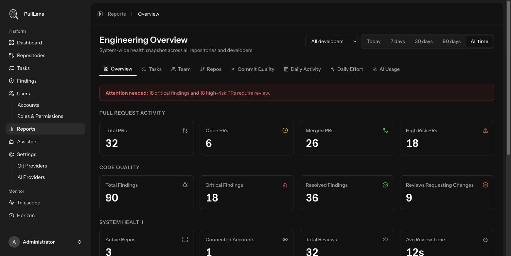
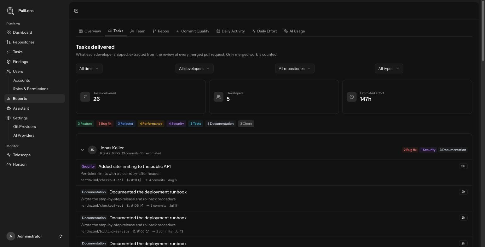
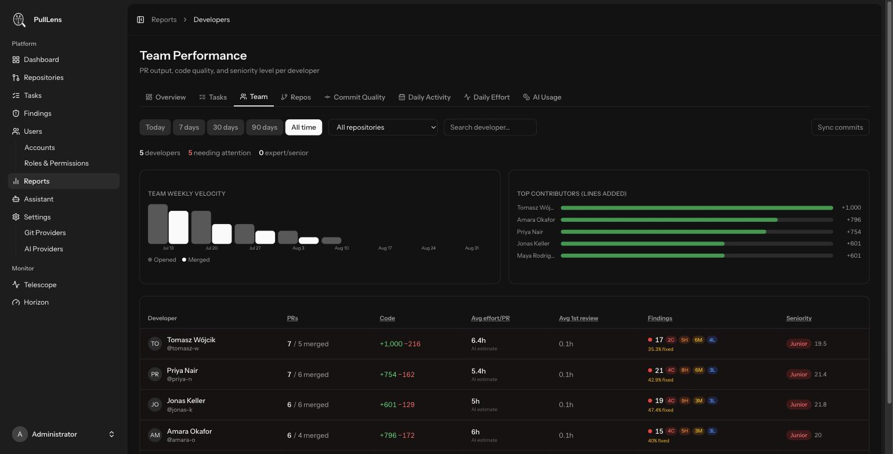
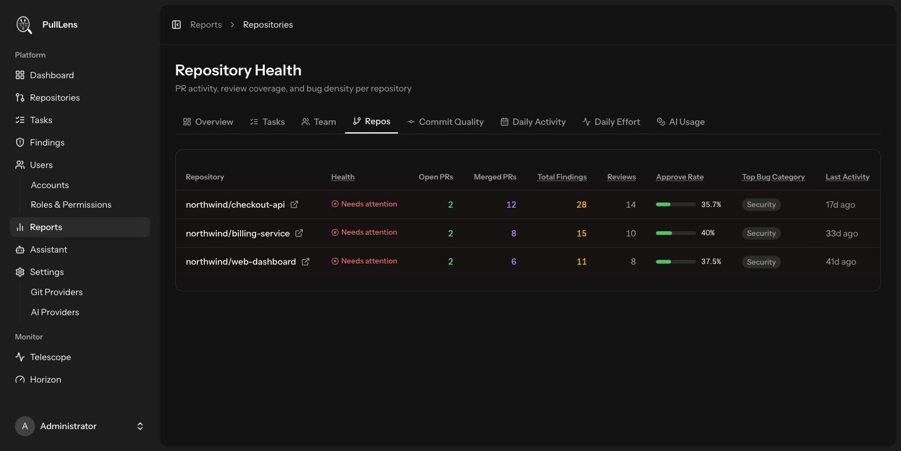
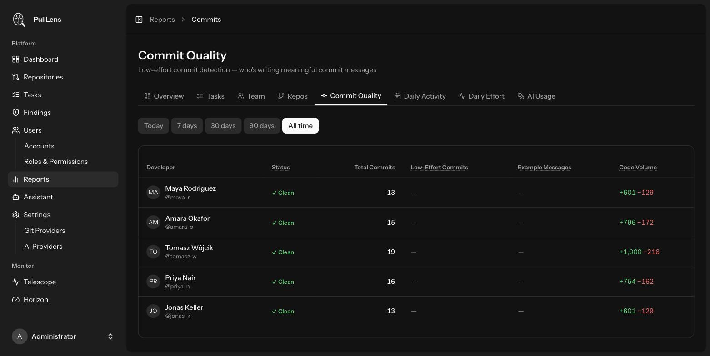
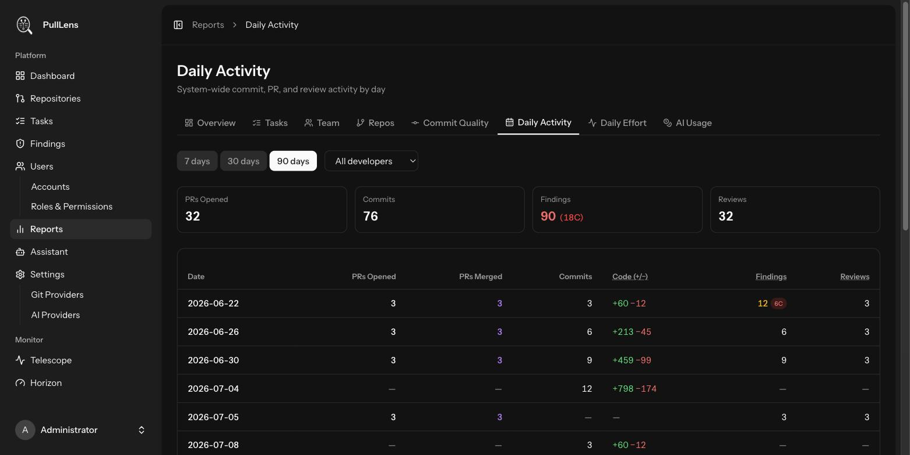
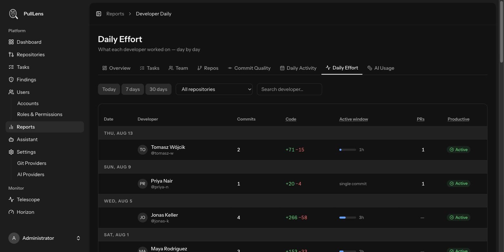
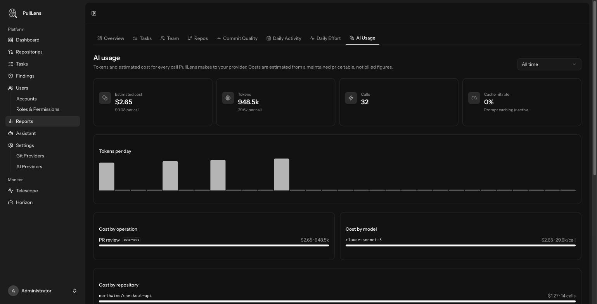

Reports
Eight reports covering delivery, quality, effort and what the AI is costing you.
These numbers are a conversation starter, not a scoreboard. Lines of code is not productivity, and anyone measured on it will happily give you more of it. Use the reports to notice that someone's work keeps coming back and to ask why - the area may be under-tested, or they may have been handed the worst part of the codebase. The data tells you where to look, never what to conclude.
Overview

Pull request activity, code quality and system health for the selected period, filterable by developer. Defaults to today, because the overview answers "what is happening now"; every other report defaults to a longer window.
Tasks delivered

Per-developer delivered work for a period - the month-end report. Each developer expands to their tasks with type, effort estimate, repository, pull request and commit count. Only merged work counts: tasks on an open pull request describe intent, and counting them would let an unmerged branch inflate somebody's month.
Team performance

| Column | Meaning |
|---|---|
| PRs | Opened and merged. |
| Code | Lines added and removed. Context, not achievement. |
| Avg effort/PR | The AI's effort estimate averaged across their pull requests. |
| Avg 1st review | How long a pull request waits before its first review. |
| Findings | Findings on their work by severity, and the share fixed. |
| Seniority | A weighted score: 60% severity-weighted finding rate, 25% fix rate, 15% review verdicts. Shown only after at least three reviewed pull requests - below that it would swing wildly and mean nothing. False positives are excluded. |
Repository health

Open and merged pull requests, findings, review count, approval rate and the most common bug category per repository. Useful for spotting the repository that quietly generates most of your risk.
Commit quality

Flags commits whose messages carry no information - wip, fix, update, asdf - and shows the share per developer with examples. One definition of "low effort" is used everywhere, so this report and the daily effort report can never disagree about the same commit.
Daily activity

Pull requests opened and merged, commits, lines changed, findings and reviews per day. Good for spotting a release crunch or a quiet stretch.
Daily effort

One row per developer per day: commits, lines, an active window and whether the day was productive. The active window is the span between first and last commit - a proxy for engaged time, not a timesheet. A single-commit day shows no span at all.
Sourced from all recorded commits, including direct pushes when Record all push activity is enabled, de-duplicated by SHA.
AI usage

| Panel | Meaning |
|---|---|
| Estimated cost | Derived from a maintained price table, not a bill. A model with no published rate on file records tokens with no cost rather than a guess. |
| Tokens / Calls | Totals and per-call averages. |
| Cache hit rate | Share of input served from cache, where the provider supports it. |
| By operation | Reviews, disputes, comment replies, assistant chats and connection tests. Automatic operations are tagged, so you can see which spend grows on its own. |
| By model / repository | Ordered by cost - a thousand cheap assistant messages matter less than fifty large reviews. |
| Largest single calls | The outliers, which is where tuning pays off. |
The diff dominates the token cost. REVIEW_MAX_TOTAL_PATCH_BYTES (default 120 KB, roughly 30k tokens) caps it. Past a few thousand lines the reviewer's findings stop improving while the bill keeps rising, so lowering it on a repository with huge generated diffs is usually free quality-wise. Choosing a cheaper model per repository is the other lever.